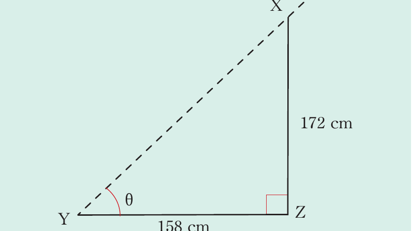
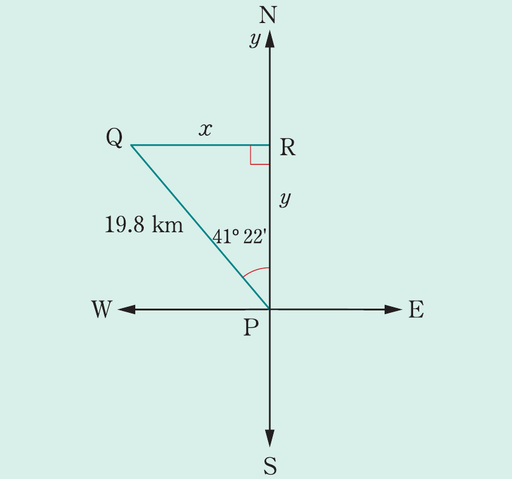

Example 8.24
A man who is 172 cm tall, notices that his shadow measures 158 cm in length. Find the angle of elevation of the sun.
Solution
Consider the following figure.

From the figure, XZ represents the height of a man, YZ represents the length of his shadow and θ is the angle of elevation of the sun. It follows that,
Therefore, the angle of elevation of the sun is 47° 26′.
Example 8.25
Petro starts from point P, travelling 19.8 km in the direction N 41° 22′W. How far has he travelled west and north, respectively?
Solution
The information is presented in the following figure.

Let x and y be the distances in km due west and north of P, respectively.
Using a right-angled triangle PRQ, It follows that,
Similarly,
Therefore, Petro travelled 13.09 km west of P and 14.86 km north of P.